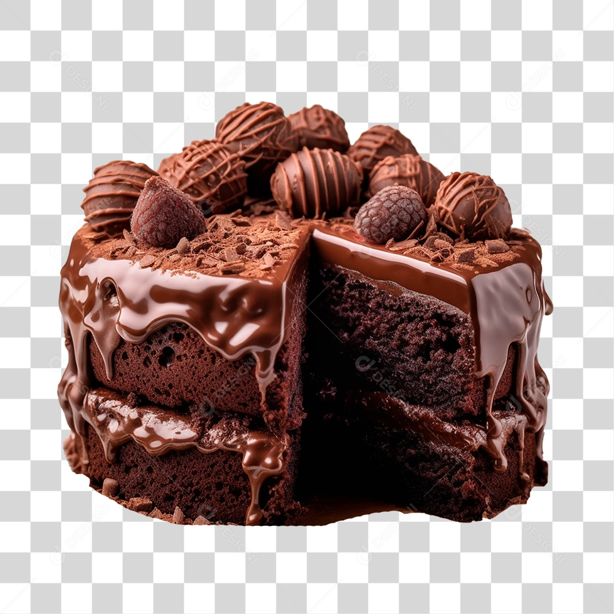

Bolo de Chocolate
| Dificuldade |
Porções |
Tempo de preparo |
| facil |
10 pedeços |
60 min |

Ingredientes:
- 3 ovos
- 1½ xícara de açúcar
- 2 xícaras de farinha de trigo
- 1 xícara de chocolate em pó ou achocolatado
- ½ xícara de óleo
- 1 xícara de água quente
- 1 colher (sopa) de fermento em pó
- 1 pitada de sal (opcional)
Modo de preparo:
- No liquidificador, bata ovos, açúcar, óleo, chocolate e parte da farinha.
- Transfira para uma tigela, adicione o restante da farinha, a água quente, o sal e o fermento, misturando
bem.
- Despeje em forma untada e asse em forno preaquecido a 180–200 °C por cerca de 40 minutos.